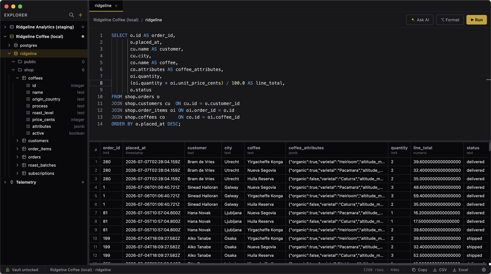
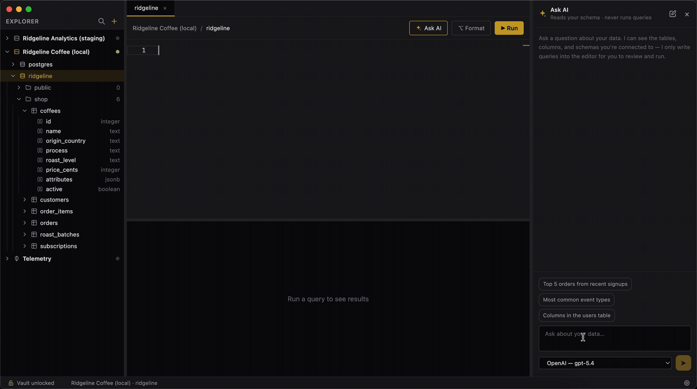

Version 1.1.0 — free and open source
All your databases, one window.
Downpick connects to PostgreSQL, SQL Server, and MongoDB, shows you what's in them, and runs your queries. It installs on your machine, keeps your passwords in an encrypted vault, and asks nothing of you beyond a password.
Apple Silicon · .dmg · Other platforms

Supported databases
PostgreSQL
Schemas, tables, and columns with their types. Full SQL, formatted on demand.
SQL Server
The same explorer and editor, against your Microsoft SQL Server instances.
MongoDB
Shell-style queries run as written. Documents as a flat table or an expandable tree.
Connect to as many of them as you like, at the same time.
Everything the work needs, nothing it doesn't.
One window, high density, no dashboards to configure.
Big results stay fast
The results grid draws only what's on screen, so a hundred thousand rows scrolls like ten.
Take the answer with you
Copy as a table straight into Slack, Sheets, or Excel — or export the whole set to CSV or Excel.
A guard on the dangerous ones
An UPDATE or DELETE with no WHERE clause asks you to confirm before it touches every row.
Stop a query mid-flight
Watch the clock climb while it runs, cancel anything taking too long, or set a timeout that cancels it for you.
Passwords under one lock
Every credential lives in an encrypted vault on your machine, locked until you unlock it.
Exactly where you left off
Open tabs, pane sizes, and window position all come back after a restart.
Every conversation, kept
Ask AI chats are saved. Each tab keeps its own, and the history lists every one you've had — reopen it or clear the lot.
The statements that return nothing
An UPDATE or a CREATE INDEX lands in Messages, one line per statement, with the rows each one touched.
Refresh without reconnecting
Someone added a database while you were connected? Reload the list from the connection menu, connection intact.
✦ Ask AI
Describe the question. Get the query.
Ask in plain language. The assistant reads your schema — the names of tables and columns, nothing more — and writes the query into the editor.
It cannot run anything. Nothing happens until you press Run, and the confirmation prompts still apply.
- No row data ever leaves your machine
- Your choice of provider, including local models
- Conversations are kept — pick any of them back up
- Optional — the rest of Downpick works without it

Free, and yours to keep.
MIT licensed, no account, no telemetry. Runs on Windows, macOS, and Linux.